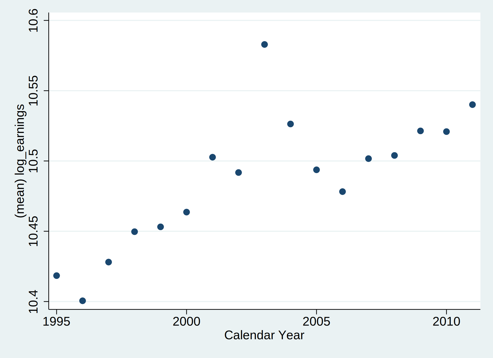
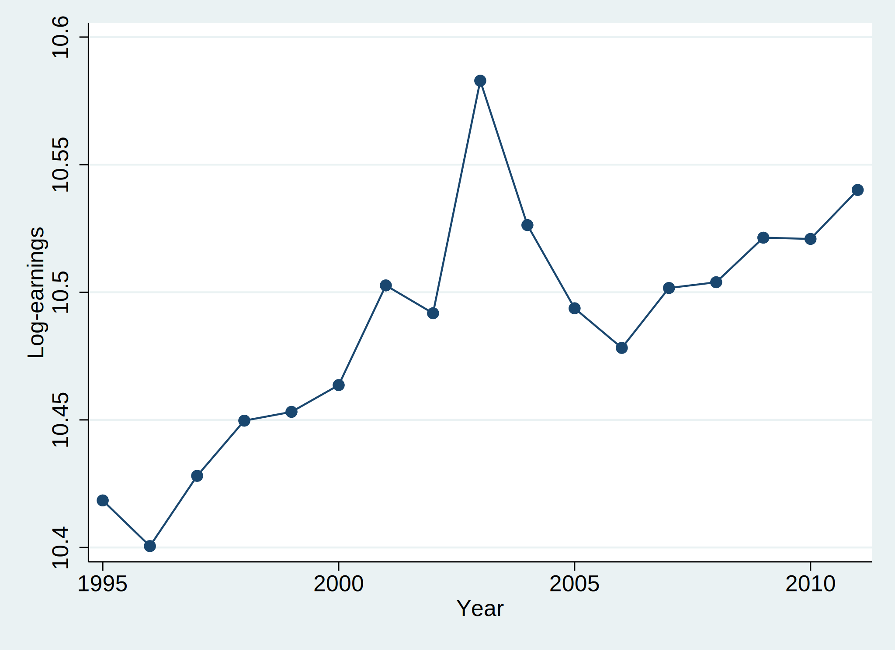
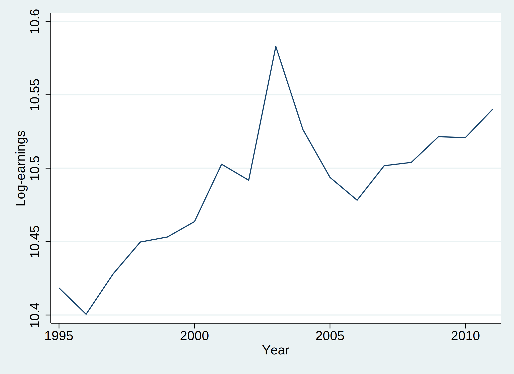
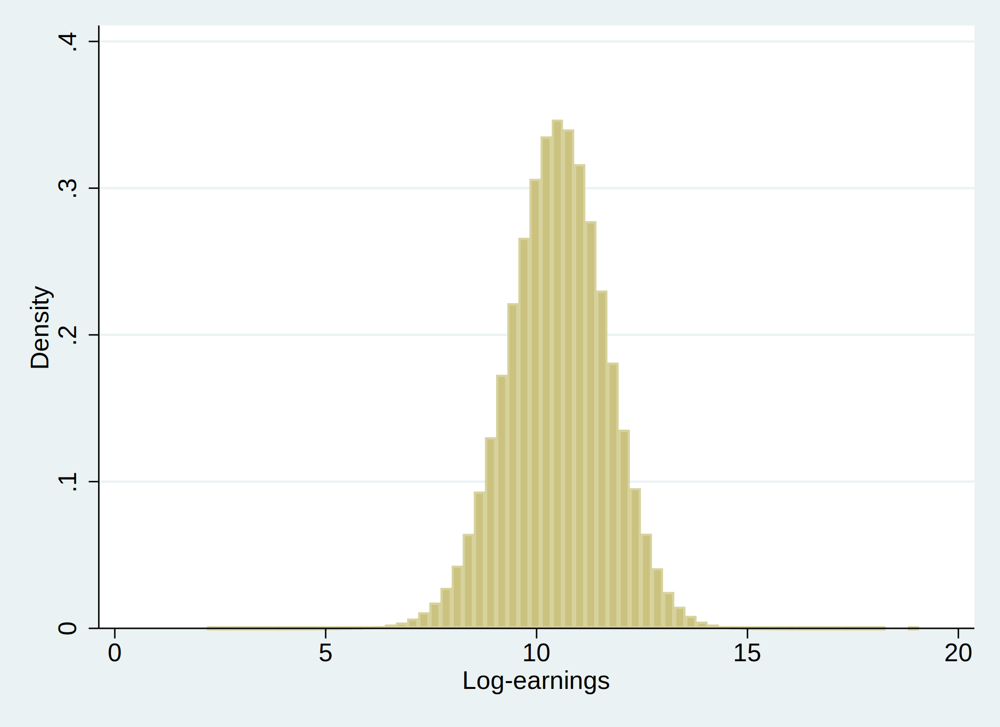
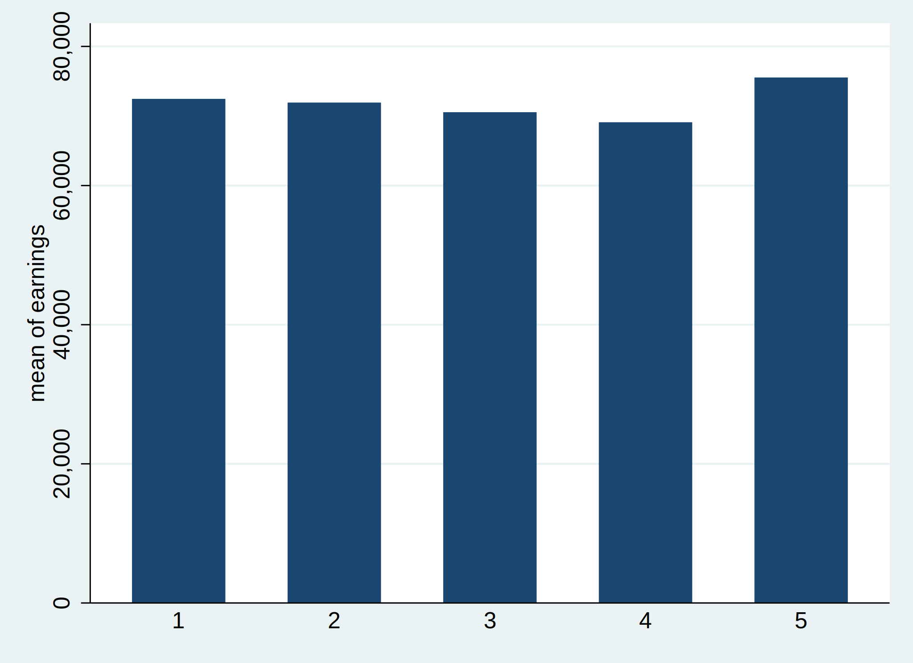
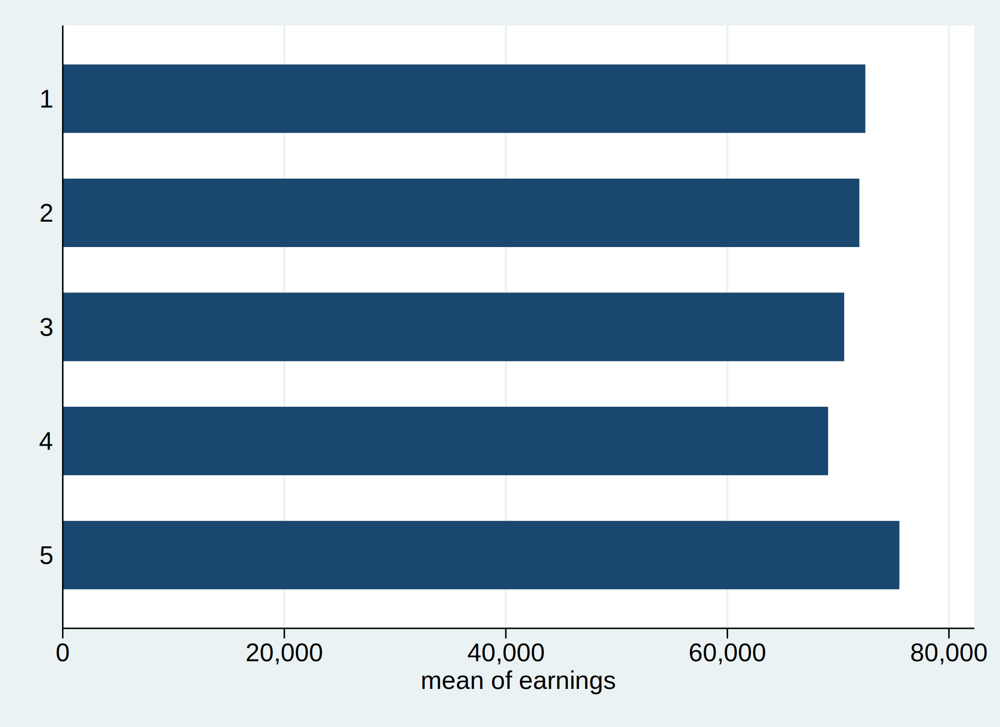
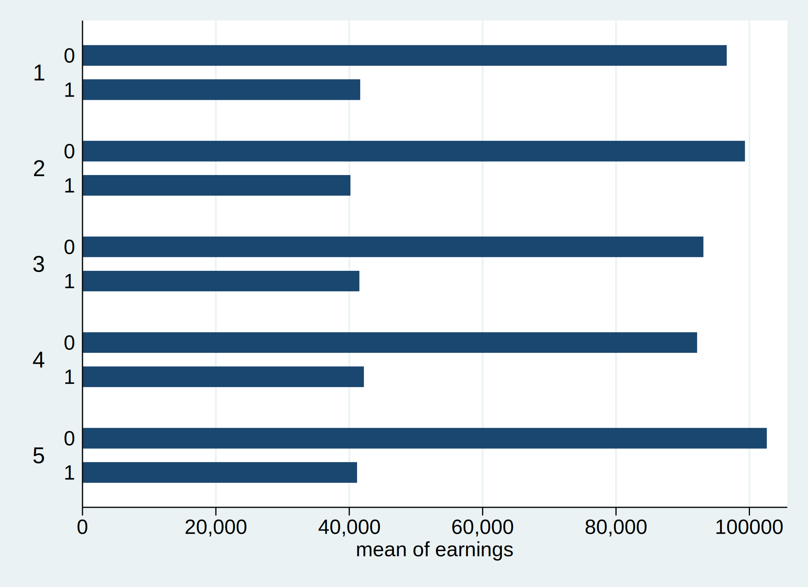

import stata_setup
stata_setup.config('C:\Program Files\Stata18/','se')09 - Creating Meaningful Visuals
econ 490
pystata
visualization
scatter plot
histogram
bar chart
twoway
This notebook goes over how to make all sorts of visuals. We look at different types of graphs, like scatter plots and histograms, exporting figures, and how to edit the figure for clarity.
Prerequisites
- Be able to effectively use Stata do-files and generate log-files.
- Be able to change your directory so that Stata can find your files.
- Import datasets in .csv and .dta format.
- Save data files.
Learning Outcomes
- Know when to use the following kinds of visualizations to answer specific questions using a data set:
- scatterplots
- line plots
- bar plots
- histograms
- Generate and fine-tune visualizations using the Stata command
twowayand its different options. - Use
graph exportto save visualizations in various formats including.svg,.pngand.pdf.
9.0 Intro
Note: The best approach to completing this module is to copy and paste these commands into a do-file in Stata. Because Stata produces graphs in a separate window, Jupyter Notebooks will not produce a graph that we can see when we execute the commands on this page. The most we can do is export image files to a directory on our computer. We will see these commands whenever a graph is produced below.
We’ll continue working with the fake data set we have been using as we work on developing our research skills. Recall that this data set is simulating information for workers in the years 1982-2012 in a fake country where a training program was introduced in 2003 to boost their earnings.
>>> import sys
>>> sys.path.append('/Applications/Stata/utilities') # make sure this is the same as what you set up in Module 01, Section 1.3: Setting Up the STATA Path
>>> from pystata import config
>>> config.init('se')%%stata
clear*
*cd ""
use fake_data, clear Data visualization is an effective way of communicating ideas to our audience, whether it’s for an academic paper or a business setting. It can be a powerful medium to motivate our research, illustrate relationships between variables, and provide some intuition behind why we applied certain econometric methods.
The real challenge is not understanding how to use Stata to create graphs. Instead, the challenge is figuring out which graph will do the best job at telling our empirical story. Before creating any graphs, we must identify the message we want the graph to convey. Try to answer these questions: Who is our audience? What is the question you’re trying to answer?
9.1 Types of Graphs
9.1.1 Scatter Plot using twoway
What is it? and, when to use?
Scatter plots are frequently used to demonstrate how two quantitative variables are related to one another. This plot works well when we are interested in showing relationships and groupings among variables from relatively large data sets.
Below is a nice example.

Let’s say we want to plot the log-earnings by year using our fake data set. We begin by generating a new variable for log-earnings.
%%stata
generate log_earnings = log(earnings)
label var log_earnings "Log-earnings" // We are adding the label "log-earnings" to the variable log_earningsNow let’s create a new data set that includes a variable that is the log-earnings by year. We use the command preserve to save the data set that we are working on. We then include the command restore to bring back the original data set.
%%stata
preserve
collapse (mean) log_earnings, by(year)
describeTo create a graph between two numeric variables, we need to use the command twoway. The format for this command is twoway (type_of_graph x-axis_variable y-axis_variable).
In this case we want to create a graph that is a scatterplot that shows log-earnings as the dependent variable (y-axis) and year as the explanatory variable (x-axis variable).
%%stata
twoway (scatter log_earnings year)
graph export graph1.jpg, as(jpg) replaceNote that no graph will appear in the notebook when we executed this command. However, we can find the graph directly saved under the name “graph1.jpg”. That graph will look like this:

A second way that we can create this graph is by replacing the graph type scatter with the graph type connected. This will create the graph below.
%%stata
twoway (connected log_earnings year)
graph export graph1.jpg, as(jpg) replace
9.1.2 Line Plot using twoway
What is it? and, when to use?
Line plots visualize trends with respect to an independent, ordered quantity (e.g., time). This plot works well when one of our variables is ordinal (time-like) or when we want to display multiple series on a common timeline.
Line plots can be generated using Stata’s twoway command we saw earlier. This time, instead of writing scatter for the type of graph, we write line.
Below we introduce something new. We have added options to the graph that change the title on the x-axis (xtitle) and on the y-axis (y-title). Options for the graph as a whole appear at the end of the command. As we will see, options that affect an individual plot appear in the brackets where the plot is specified.
%%stata
twoway (line log_earnings year), xtitle("Year") ytitle("Log-earnings")
graph export graph3.jpg, as(jpg) replaceIt should look something like this:

Now, let’s try creating a line plot with multiple series on a common twoway graph. To create this graph we first need to restore our data to the original version of the “fake_data” data set.
%%stata
restoreNow that we have done that, we can collapse it to create the mean of log_earnings by both year and treated
%%stata
preserve
collapse (mean) log_earnings, by(treated year)
describeWe can create a graph that separates the earnings between the treated and non-treated over time. We need to add each line separately to the graph. Within brackets, we can choose the observations we want included. We can also add line specific options, like color.
%%stata
twoway (connected log_earnings year if treated==1, color(orange)) (connected log_earnings year if treated==0, color(purple)), xtitle(Year) ytitle(Average Log Earnings)
graph export graph4.jpg, as(jpg) replaceOne final tip about working with scatterplots: sometimes we will want to draw a fit line on our graph that approximates the relationship between the two variables. We can do this by adding a second graph to the twoway plot that uses the graph type lfit.
9.1.3 Histogram using twoway
What is it? and, when to use?
Histograms visualize the distribution of one quantitative variable. This plot works well when we are working with a discrete variable and are interested in visualizing all its possible values and how often they each occur.
Now let’s restore the original data set so that we can plot the distribution of log_earnings and draw a simple histogram.
%%stata
restore
histogram log_earnings
graph export graph5.jpg, as(jpg) replaceIt will look like this:

We can also draw two histograms on one plot. They won’t look very nice unless we change the plot colours though. But, if we execute the command below, it should create a nice graph that allows us to compare the distributions of log_earnings between the treatment and control groups.
%%stata
twoway (histogram log_earnings if treated==0, color(orange) lcolor(black)) ///
(histogram log_earnings if treated==1, color(olive) lcolor(black)), ///
legend(label(1 "Treated") label(2 "Untreated"))
graph export graph6.jpg, as(jpg) replace9.1.4 Bar Plot using graph
What is it? and, when to use?
Bar plots visualize comparisons of amounts. They are useful when we are interested in comparing a few categories as parts of a whole, or across time. Bar plots should always start at 0. Starting bar plots at any number besides 0 is generally considered a misrepresentation of the data.
Let’s plot mean earnings by region. Note that the regions are numbered in our data set.
To make a bar plot, we have to use the command graph instead of twoway. The syntax is similar:graph bar (statistic) x-var, over(grouping_var).
See an example below:
%%stata
graph bar (mean) earnings, over(region)
graph export graph7.jpg, as(jpg) replace
We can also create a horizontal bar plot by using the option hbar instead of bar.
%%stata
graph hbar (mean) earnings, over(region)
graph export graph8.jpg, as(jpg) replace
We can also group our bars over another variable (or “category”).
%%stata
graph hbar (mean) earnings, over(treated) over(region)
graph export graph9.jpg, as(jpg) replace
9.2 Exporting Format
So far, we have been exporting our graphs in .svg format. However, we can also export graphs in other formats such as .jpg, .png, and .pdf. This may be particularly helpful if using LaTeX to write a paper, as .svg files cannot be used with LaTeX PDF output.
9.3 Fine-tuning a Graph Further
In order to customize our graph further, we can use the tools in the Stata graph window or the graph option commands we have been using in this module. Namely, we can include and adjust the following:
- title
- axis titles
- legend
- axis
- scale
- labels
- theme (i.e. colour, appearance)
- adding lines, text or objects
Let’s see how to add some of these customizations to our graphs in practice. For example, let’s modify our latest bar graph such that:
- the title is “Earnings by region and treatment”: we do this with the option
title(); - the axis title is “Earnings (average)”: we do this with the option
ytitle(); - the regions and the treatment status are labeled: we do this with the sub-option relabel within the over option,
over(varname, relabel()). Remember that relabelling follows the order in which the values appear: e.g., for treated and untreated, the not treated group appears first and the treated group appears second, therefore we have to use 1 to indicate the non-treated group and 2 to indicate the treated group:over(treated, relabel(1 "Not treated" 2 "Treated")); - the background color is white: we do this with the option
graphregion(color()); - the color of the bars is dark green: we do this using the option bar and its suboptions. Remember that we need to specify this option for each variable we are plotting in the bars. In our case, we are only plotting variable earnings, which is by definition the first variable we are plotting, therefore all sub-options refer to 1:
bar(1, fcolor(dkgreen)).
%%stata
graph hbar (mean) earnings, ///
over(treated, relabel(1 "Not treated" 2 "Treated")) ///
over(region, relabel(1 "A" 2 "B" 3 "C" 4 "D" 5 "E")) ///
title("Earnings by region and treatment") ytitle("Earnings (average)") ///
graphregion(color(white)) bar(1, fcolor(dkgreen))
graph export graph10.jpg, as(jpg) replaceThese are just some of the customizations available to you. Other common options are:
- adding a labelled legend to our graphs. To include the legend, we use the option
legend( label(number_of_label "label")); - adding a vertical line, for example one indicating the year in which the treatment was administered (2003). To include the indicator line we use the the option
xline(). The line can also have different characteristics. For example, we can change its color and pattern using the optionslcolor()andlpattern().
We can always go back to the Stata documentation to explore the options available based on what we need to do. We can also adjust many of these aspects in the Graph Editor that appears wheneve we create a new graph (top right corner). Just don’t forget to save your graph when you are done since this won’t be in your do-file!
When thinking about colors, always make sure that your graphs are accessible to everyone. Run the code cell below to view the colorstyle options available in Stata. If the color you desire is not available, you can input its RGB code within quotes: for example, a red line would be lcolor("248 7 27"). You can learn more about accessible color combinations on this website.
%%stata
help colorstyle9.4 Wrap Up
We have learned in this module how to create different types of graphs using the command twoway and how to adjust them with the multiple options which come with this command. However, the most valuable take-away from this module is understanding when to use a specific type of graph. Graphs are only able to tell a story if we choose them appropriately and customize them as necessary.
Remember to check the Stata documentation when creating graphs. The documentation can be your best ally if you end up using it.
9.5 Wrap-up Table
| Command | Function |
|---|---|
twoway scatter |
It creates a scatterplot. |
twoway connected |
It creates a scatterplot where points are connected by a line. |
twoway line |
It creates a line graph. |
twoway histogram |
It creates a histogram. |
graph bar, over(varname) |
It creates a bar graph by category of varname. |
9.6 Further Reading
References
Timbers, T., Campbell, T., Lee, M. (2022). Data Science: A First Introduction
Schrimpf, Paul. “Data Visualization: Rules and Guidelines.” In QuantEcon DataScience. Edited by Chase Coleman, Spencer Lyon, and Jesse Perla.
Kopf, Dan. “A brief history of the scatter plot.” Quartz. March 31, 2018.
Histograms in Stata
Box plots in Stata
Pie charts in Stata
Bar graphs in Stata
Basic scatter plots in Stata
Modifying sizes of elements in graphs
Modifying graphs using the Graph Editor